1、名称关键字
1.1 返回
帮助提示如下：
通过“返回”的帮助提示可知，调用后当前方法会执行结束，并且会返回到调用语句处。如果有返回值，则会返回一个值到执行语句处。
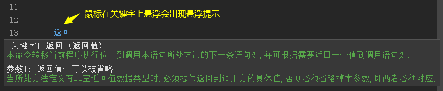
也就是如下图所示，当“测试方法()”被“返回()”方法返回后，会返回到当前方法调用的位置，如果此位置定义了变量来接收返回值，则首先会执行这个赋值操作，然后才会执行下一行的“信息框()”方法。
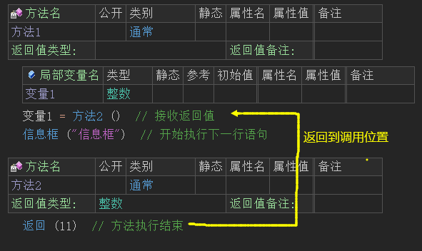
本方法的参数可以提供任意类型数据，但必须保证能够匹配“返回值类型”一栏中所提供的数据类型。
如下图所示：
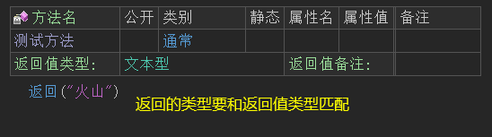
如果某方法的没有提供返回值类型，也可以使用“返回”，此时的“返回”不需要输入括号。
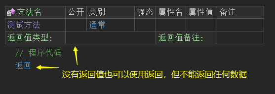
一个方法只能拥有一个返回值，如果重复返回多次，则以一次的返回值为主。
如下图所示：
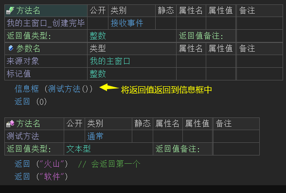
最终程序运行后可看到返回了“火山”。
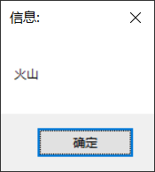
如果“返回”写到流程语句或者循环语句中，则流程或循环会提前结束并返回。
如下图所示：
流程语句：
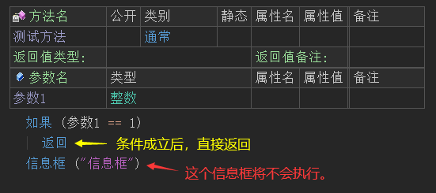
循环语句：
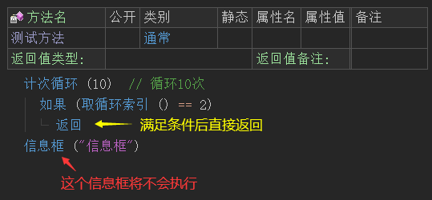
返回的额外输入字：
除了使用全、首拼输入外，还可以使用“return”来输入。
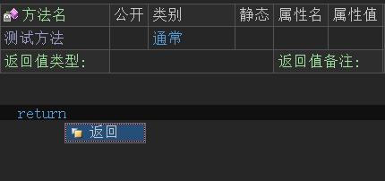
1.2 属于
本关键字是一种判断关键字，关键字的左侧参数提供实例对象、右侧参数提供数据类名。用于返回左侧的对象是否为右侧类或者其直接/间接继承类的实例对象。
最终判断结果会返回逻辑型，如果符合返回真，即表示左侧对象能安全转换到右侧类数据类型。
注意: 左侧对象的数据类型必须为类，而且必须与右侧类之间存在继承/被继承关系或者等于右侧类本身才会符合条件。
如下图所示：
利用“属于”来判断“测试2对象”是否属于“测试类1”，此处必然返回真。
因为“测试类2”继承了“测试类1”，既然继承了测试类1，那么必然存在测试类1，因此这个属于条件必然是成立的。
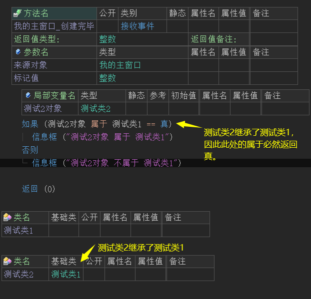
最终结果也证明“测试2对象”是属于“测试类1”的。
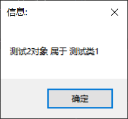
除了继承关系相等外，如果类型相等本条件也会返回真。
如下图所示：
用“测试2对象”和“测试类1”进行判断，其结果也必然是会返回真，因为类型是完全一致的。
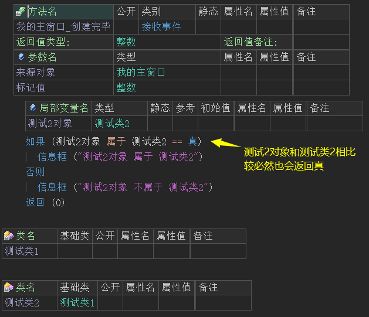
最终结果也证实了这一点。
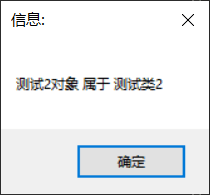
全部比较结果如下图：
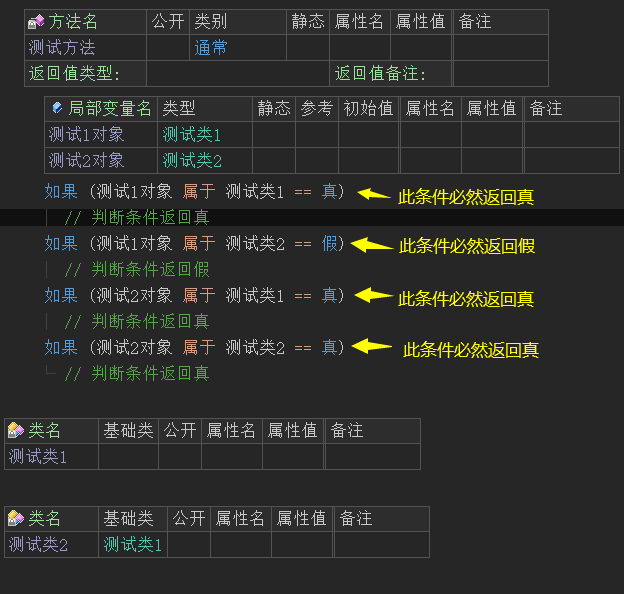
如果符合条件就可以进行强制转换操作，让左侧对象强制转换为右侧类型。
如下图所示：
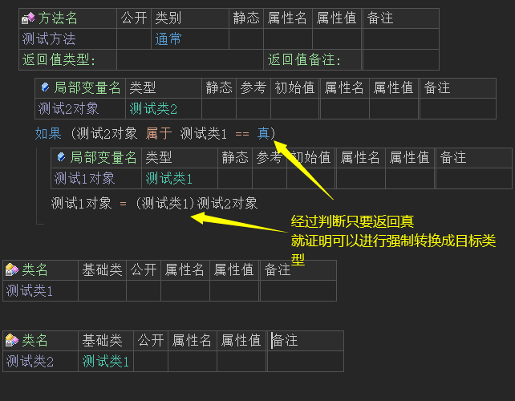
属于的额外输入字：
除了使用全、首拼输入外，还可以使用“instanceof”来输入。
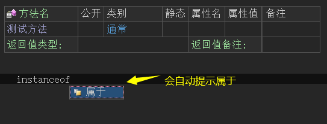
1.3 逻辑值
逻辑值只有“真”和“假”，主要用于表示逻辑型。
例如：上述中的“属于”关键字，其判断结果就是逻辑型，就可以使用真或假来判断其结果。
使用方式如下，用于变量、常量、赋值以及条件判断操作。
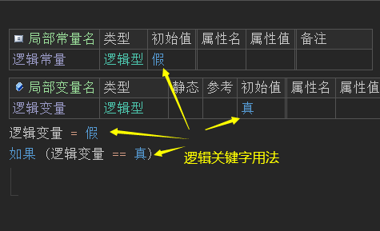
真/假的额外输入字：
除了使用全、首拼输入外，“真”还可以使用“ture”来输入，“假”还可以使用“false”来输入。
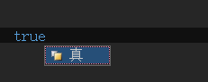
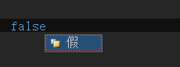
1.4 空对象
用作代表空对象，可以匹配所有非常量类的类数据类型以及文本型。
需要注意的是，当对象实例为空对象时，这个对象将不能进行任何操作。
如下图所示：
假设某个方法提供了一个“测试类”的参数，并且默认值为空对象，此时如果想要操作这个参数数据，首先需要判断其是否为空对象，然后在执行相应的方法操作。
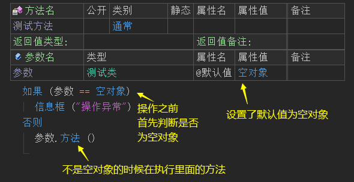
空对象除了用于判断之外，还可以用于赋值，传参如下图所示：
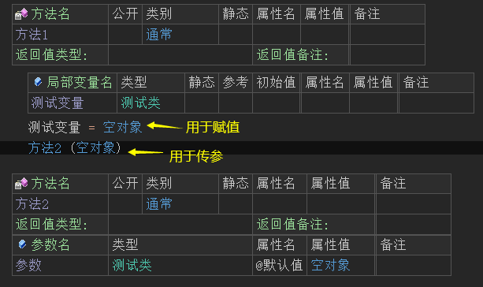
空对象的额外输入字：
可以使用“null”输入空对象。
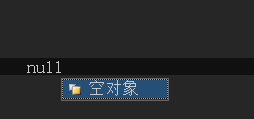
1.5 父对象
用于表示在类成员方法中代表所处类的父类(基础类)对象。
父对象主要是用作当基础类中存在与本类中相同名称的方法(譬如虚拟方法)时强制调用基础类的方法。
如下图所示：
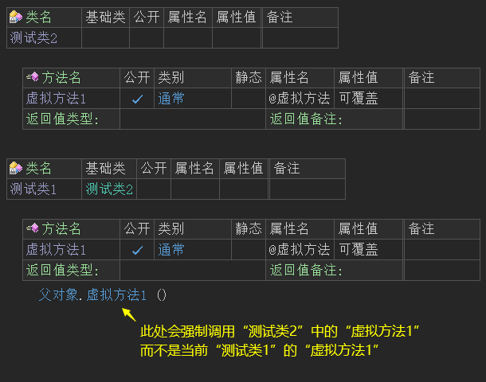
也可用于调用父类中的通常方法，如下图所示：
在“测试类2”的基础类为“测试类1”，然后就可以通过“父对象”调用“方法1()”。
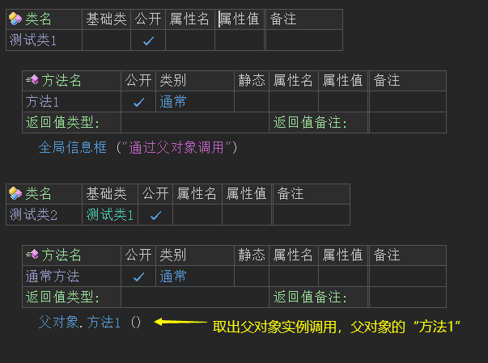
在窗口被创建完毕时调用“测试类2”的通常方法。
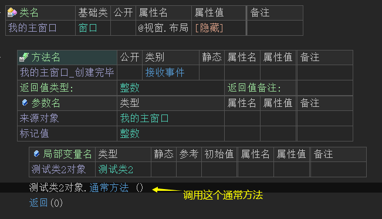
最终会执行“测试类1”中的“方法1”，并弹出一个信息框。
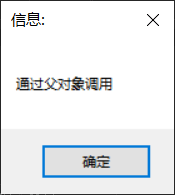
当然在实际开发过程中，“父类”(基础类)的方法支持直接输入调用，可以省略“父对象”的关键词。
如下图所示：
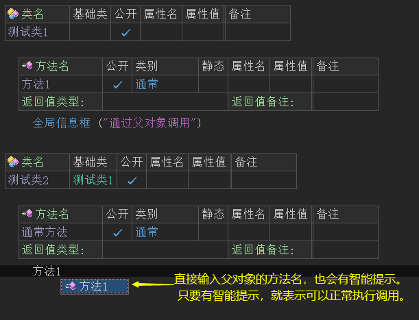
注意: 如果语句所处方法为静态方法，由于此时根本不存在当前类的实例对象，所以不能使用本关键字。
如下图所示：
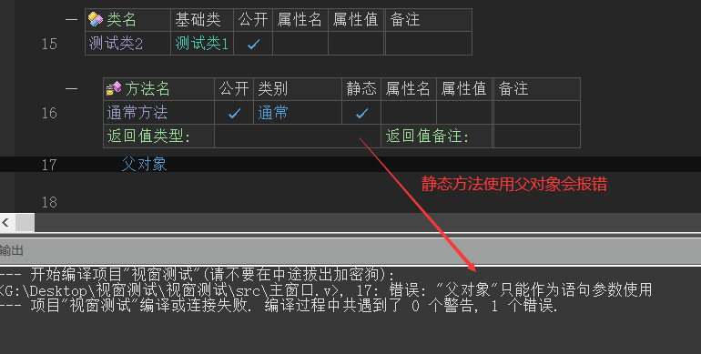
父对象的额外输入字：
可以使用“super”输入父对象。
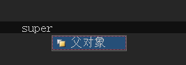
1.6 本对象
本对象表示当前代码语句所处类的对象本身。
如下图所示：
例如，在“测试类1”中使用本对象就表示是“测试类1”的对象本身。同理，如果有一个类叫“测试类2”，并且在测试类2中使用本对象，那么此时的本对象就表示的是“测试类2”的对象本身。
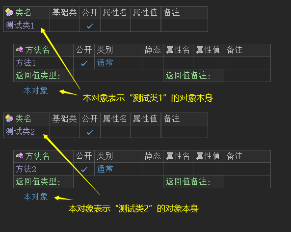
由此可以得出，如果某个方法的参数是当前类对象的时候就可以提供“本对象”进行传递参数。
如下图所示：
火山视窗的通用对话框的“打开()”方法，需要提供一个“窗口”对象。
在使用这个方法时，如果当前类是“窗口”或者其基础类是“窗口”时都可以使用“本对象”进行进行传递参数。
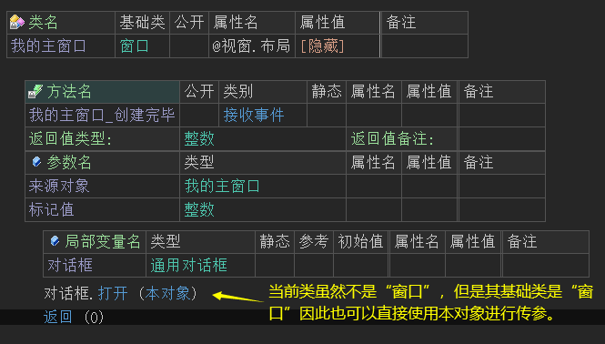
如果在其它类中调用这个“通用对话框”的“打开()”方法，就不能使用“本对象”进行传递参数。
如下图所示的写法是错误的：
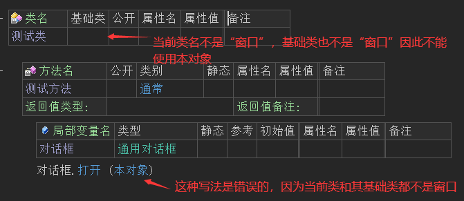
正确的写法如下，可通过传递“窗口”参数来解决，其它类中使用的问题。
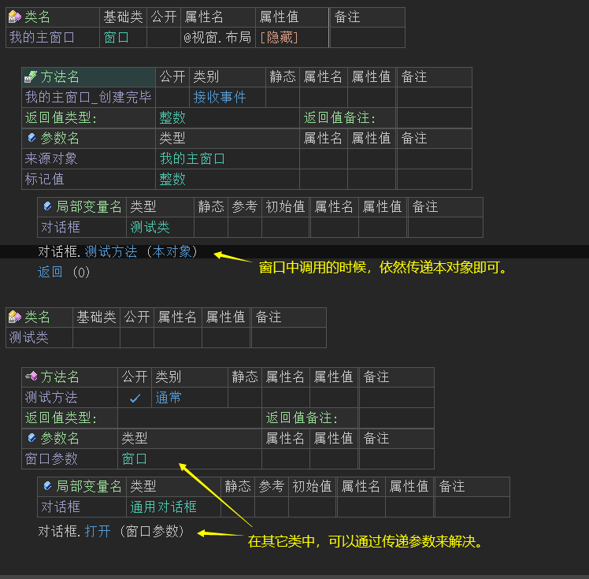
需要注意的是，如果在使用本对象时当前方法是静态方法，则不支持使用本对象关键字，因为静态方法中不存在当前对象实例。
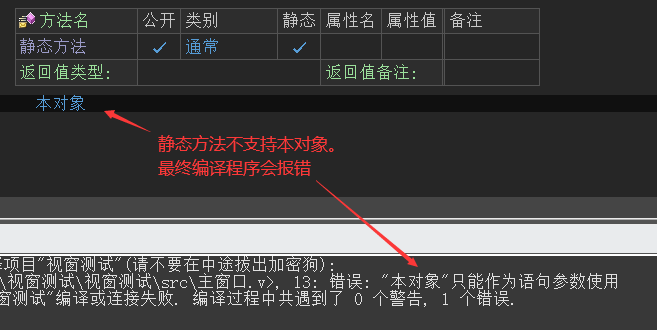
本对象的额外输入字：
可以使用“this”输入本对象。
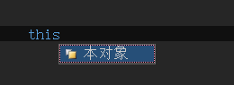
2、方法关键字
2.1 事件方法
2.1.1 挂接事件
本方法用于动态挂接指定对象的事件，共有两个参数，如下：
参数1：提供要挂接的对象名称。
参数2：提供整数标记值，当多个类型相同的对象同时挂接时，可以在事件接收方法的“标记值”参数中获取到此标记，从而用于区分对象来源。
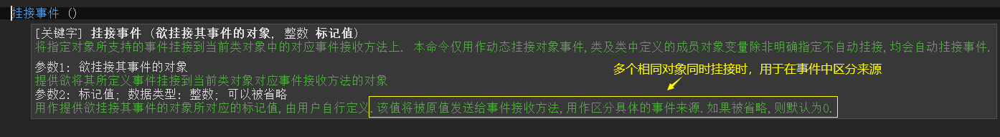
1. 如何挂接事件？
如果想要指定对象进行“挂接事件”操作，必须满足以下条件：
(1) 其对象必须拥有“事件定义方法”。
如下图所示的“测试类”想要进行挂接事件的写法是错误的，因为“测试类”中并没有任何事件。
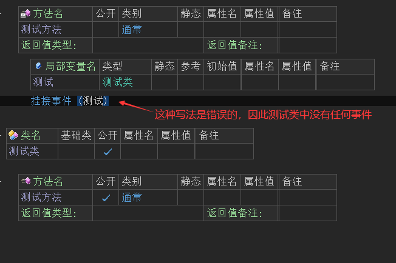
(2) 使用本方法后必须添加指定对象的接收事件方法。
如下图所示，使用“挂接事件()”方法后，必须添加“测试类”的接收事件方法，用于接收事件。
注意：如果存在多个相同数据类型的对象需要挂接事件，可以通过填写挂接事件的参数2，来判断事件来源。
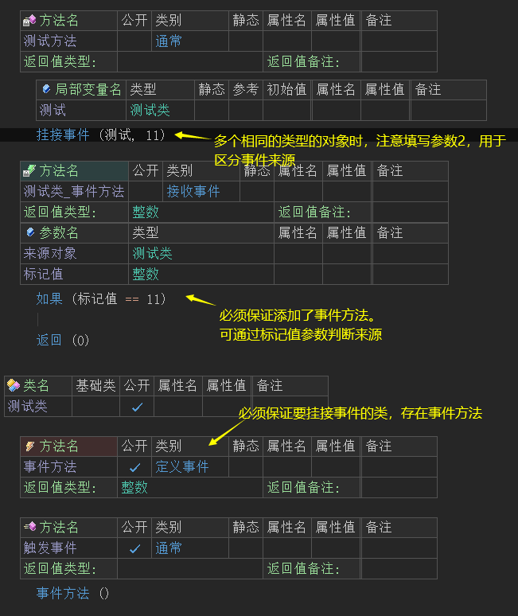
2. 什么时候需要挂接事件？
安卓平台挂接事件：
(1) 当对象为非参考成员变量时会自动挂接事件，如下图所示：
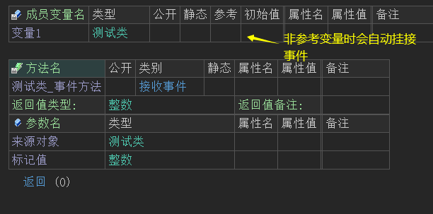
注意：在使用火山系统库中的某个类时，即使是非参考成员变量，可能也需要通过某个属性或方法来开启事件，名称中一般包括“支持/允许”之类的字样。
如下图所示，轮播图组件需要设置“支持页面改变监听”属性为真，才可以触发“页面被选择”事件。
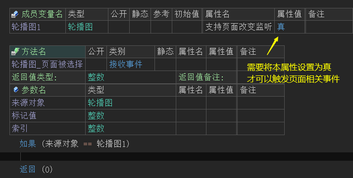
(2) 当对象为参考变量时需要挂接事件，如下图所示：
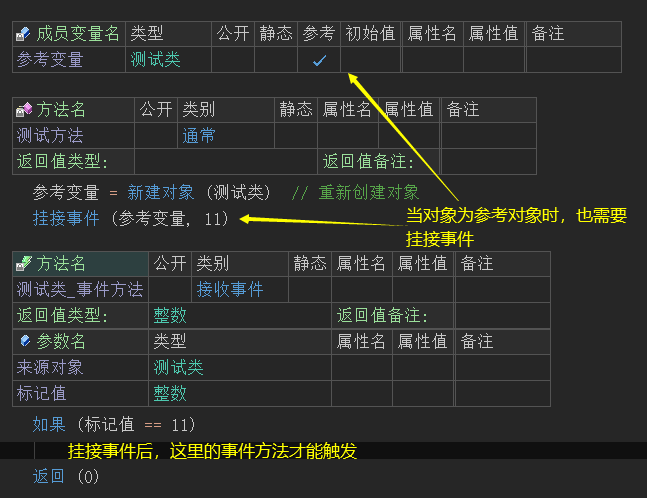
(3) 当对象为局部变量时需要挂接事件，如下图所示：
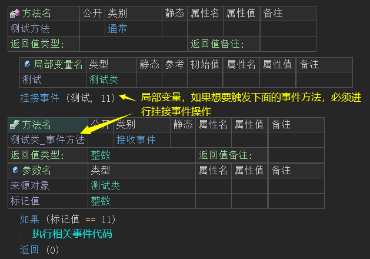
(4) 当对象事件需要发送到其它类中使用时，需要挂接事件。
如下所示“组件布局类”中的按钮组件事件想要在窗口中触发事件，就需要进行挂接事件操作。
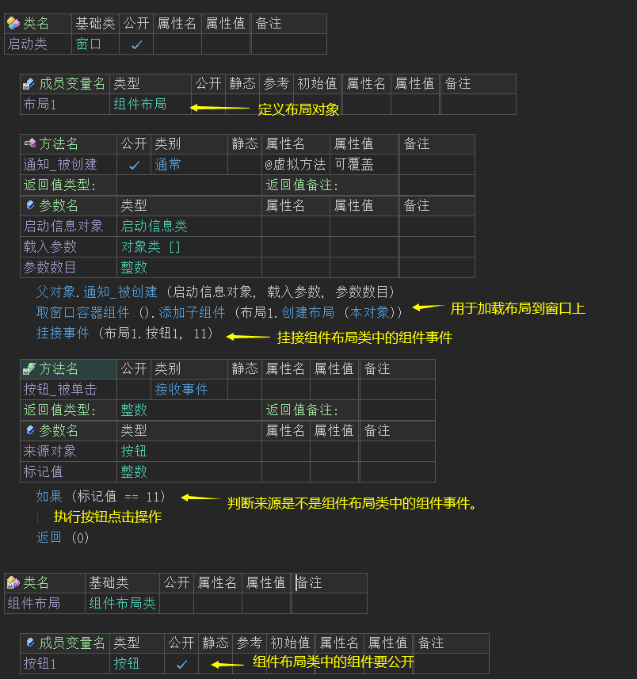
视窗平台挂接事件：
(1) 当对象为非参考成员变量时会自动挂接事件，如下图所示：
(2) 局部变量不可以进行挂接事件，因为其对象实例会立刻销毁，因此如果某类中存在事件应定义为成员变量。
(3) 动态创建对象需要手动挂接事件。
如下图所示，动态创建一个按钮时需要挂接事件：
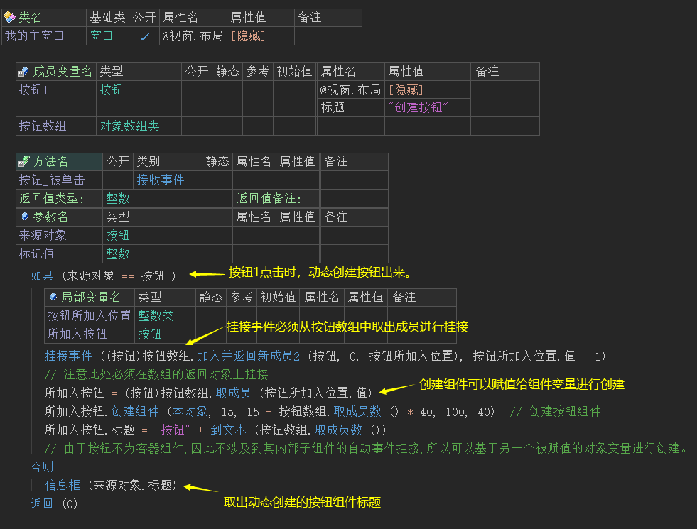
运行后可看到动态创建的按钮也可以正常点击：
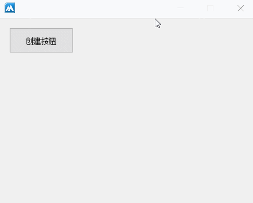
(4) 当对象事件需要发送到其它类中使用时，需要挂接事件。
如下所示“组件布局器”中的按钮组件事件想要在窗口中触发事件，就需要进行挂接事件操作。
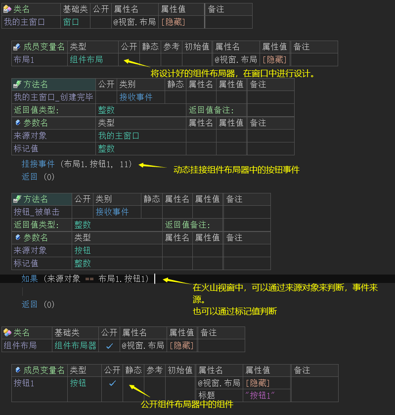
2.1.2 取消事件挂接
不再将指定对象所支持的事件挂接到当前类对象中的对应事件接收方法上。
无论是自动挂接事件的类成员对象变量，还是手动调用挂接事件关键字挂接的对象，均可以调用本关键字取消其事件挂接。事件挂接一旦取消，该对象的事件将不会再被接收到，谨慎使用。
如下图所示调用即可取消所有事件：
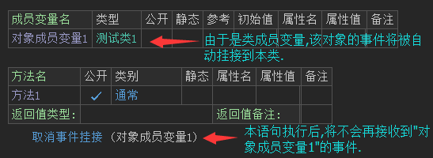
2.2 运算方法
2.2.1 取反
本方法可对逻辑值进行取反。
如下图:
本方法只有一个逻辑型参数，如果参数中提供真，则返回值会返回假，用于取出反转的逻辑值。
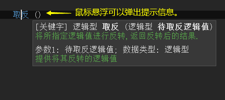
如下图进行调用即可：
本方法的参数可以提供逻辑立即数，变量，方法等，只要其数据类型为逻辑型即可。
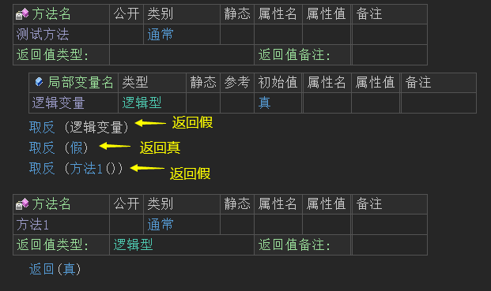
2.3 位运算方法
2.3.1 了解位运算
位运算是指对数值进行二进制的逐位运算。我们知道现代电子计算机内部采用的都是二进制方式存储和处理数据的，输入到计算机的数组、字母、汉字等信息都以二进制的形式存储。在计算机内部用“比特(bit)”这个单位来表示一个二进制，其状态只有0或1两种，位运算命令就是直接改变这些“比特”来达到改变数据的效果。想要了解位运算，首先来需要简单了解一下计算机中的常用进制。
注意：在火山中所有的位运算都是针对“整数”类型操作，而整数的长度固定为4个字节=32比特(位)，也就是一组32位长度的二进制数。
2.3.2 常用进制
在计算机内部运算中，常用的进制有四种。
(1) 二进制：逢2进1，由数字0和1组成，例如：1010110，数值都限制在0和1之间。
(2) 八进制：逢8进1，由数字0到7组成，例如：21270，数值都限制在0到7之间。
(3) 十进制：逢10进1，有数字0到9组成，例如：1230569，数值都限制在0到9之间。
(4) 十六进制：逢16进1，有数字0到9和字母A到F组成，例如：309F7B，其内容都限制在0到9和A到F之间。
所谓二进制就是“逢2进1、借1当2”为原则，对数值进行计数的进位制。它和我们日常使用的十进制类似，只不过十进制是“逢10进1、借1当10”。
进制之间是可以相互转换的，可以使用一些第三方工具来进行操作：https://tool.lu/hexconvert/
2.3.3 位取反
如下图：
本方法可以将一个整数值的二进制中的每一位进行取反，即0变1、1变0，返回反转后的结果值。
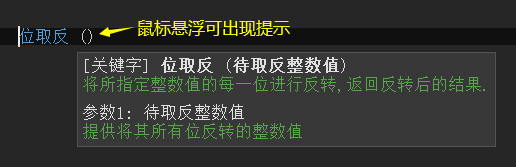
示例如下：
对5进行位取反运算操作。
最终结果返回-6。
运算过程解析：
“5”的二进制表达式为：0000 0000 0000 0000 0000 0000 0000 0101。
在执行位取反运算后，返回：1111 1111 1111 1111 1111 1111 1111 1010，但是如果你直接用这个二进制去转换十进制是得不到“-6”这个结果的。
那么为什么结果最终是-6呢？那么首先需要了解负数的二进制表达方式。
现在计算机普遍使用补码表示负数。知道一个数的补码，要求其值的方法是：首先看符号位（最左一位），如果是1代表是负数(-)如果是0代表是正数(+)，然后对该值取反再+1，得到其结果值。
例如本例中得到的 1111 1111 1111 1111 1111 1111 1111 1010，其符号位（最左一位）是1，表明它表示的是负数，欲求其结果值，需先对其取反，然后再加1：0000 0000 0000 0000 0000 0000 0000 0101 + 1 = 0000 0000 0000 0000 0000 0000 0000 0110，然后在得到的结果值前加一个负号，即-0000 0000 0000 0000 0000 0000 0000 0110 = -6。
由此可以总结出“位取反()”的计算结论是：位取反(n)=-(n+1)。
例如本例中：位取反(5) = -(5+1)，即位取反(5) = -6
2.3.4 位与
如下图：
本方法用于将两个整数数据的二进制值中的同比特位进行“与”运算，返回运算后的结果值。
与运算：如果两个数值的共同位均为1，则返回值的对应位也为1，否则为0。
注：对多个整数值进行连续运算可以使用火山系统库中的“连续位与()”方法。
例如：
一个二进制数的第四位为1，另一个二进制数的第四位为1，则返回值的第四位为1。
一个二进制数的第四位为0，另一个二进制数的第四位为1，则返回值的第四位为0。
一个二进制数的第四位为1，另一个二进制数的第四位为0，则返回值的第四位为0。
一个二进制数的第四位为0，另一个二进制数的第四位为0，则返回值的第四位为0。
示例如下：
对56和89进行位与运算。
最终结果为24。
运算过程解析：
56和89分别转换成二进制为：0011 1000和0101 1001，进行与的运算后即会得出结果0001 1000转换成十进制即“24”。
2.3.5 位或
如下图：
本方法用于将两个整数数据的二进制值进行“或”运算，返回运算后的结果值。
或运算：如果两个数值的共同位中有一个为1，则返回值的对应位也为1，否则为0。
注：对多个整数值进行连续计算可以使用火山系统库中的“连续位或()”方法。
例如：
一个二进制数的第四位为1，另一个二进制数的第四位为1，则返回值的第四位为1。
一个二进制数的第四位为0，另一个二进制数的第四位为1，则返回值的第四位为1。
一个二进制数的第四位为1，另一个二进制数的第四位为0，则返回值的第四位为1。
一个二进制数的第四位为0，另一个二进制数的第四位为0，则返回值的第四位为0。
示例如下：
对56和89两位十进制整数进行位或运算。
最终结果为121。
运算过程解析：
56和89分别转换成二进制为：0011 1000和0101 1001，进行与的运算后即会得出结果0111 1001转换成十进制即“121”。
2.3.6 位异或
如下图：
本方法用于对二进制数值的共同比特位进行“异或”运算，返回运算后的结果值。
异或运算：如果两个数值的共同位相等（均为0或均为1），则返回值的对应位就是0，否则为1。
注：对多个整数值进行连续计算可以使用火山系统库中的“连续位异或()”方法。
例如：
一个二进制数的第四位为1，另一个二进制数的第四位为1，则返回值的第四位为0。
一个二进制数的第四位为0，另一个二进制数的第四位为1，则返回值的第四位为1。
一个二进制数的第四位为1，另一个二进制数的第四位为0，则返回值的第四位为1。
一个二进制数的第四位为0，另一个二进制数的第四位为0，则返回值的第四位为0。
示例如下：
对56和89两位十进制整数进行位异或运算。
最终结果为97。
运算过程解析：
56和89分别转换成二进制为：0011 1000和0101 1001，进行与的运算后即会得出结果0110 0001转换成十进制即“97”。
如果一个数值连续异或两个相同的数值，将返回该数值本身。如：连续位异或 (1, 2, 2) 最终结果会返回最初的值1，利用此特性可以进行简单的数值加解密操作。
如下图所示：
将数值2作为用来位异或加密的密钥值，将数值1进行位异或加密，在需要解密的时候对加密结果再次进行位异或即可恢复原值。
最终恢复原值：
2.3.7 位左移
如下图：
本方法用于将一个整数值的所有二进制比特位向左移动所指定位数，最右侧使用0补位，最左侧被移出的比特位将被抛弃。
例如：
二进制: 1010 0000 0000 0000 0000 0000 0000 1111，向左移动两位后返回 1000 0000 0000 0000 0000 0000 0011 1100，最左侧的10将被抛弃，最右侧自动补0。
示例如下：
对80十进制整数进行位左移2位运算。
最终结果为320。
运算过程解析：
80转换成二进制为：0101 0000，进行位左移两位后即会得出结果0001 0100 0000转换成十进制即“320”。
2.3.8 位右移
如下图：
本方法用于将一个整数值的所有二进制比特位向右移动所指定位数，最左侧使用0补位，最右侧被移出的比特位将被抛弃。
例如：
二进制: 1010 0000 0000 0000 0000 0000 0000 1111，向右移动两位后返回 0010 1000 0000 0000 0000 0000 0000 0011，最左侧将会补0，最右侧将被抛弃两位。
示例如下：
对80十进制整数进行位右移2位运算。
最终结果为20。
运算过程解析：
80转换成二进制为：0101 0000，进行位右移两位后即会得出结果0001 0100转换成十进制即“20”。
3、常用基础方法
3.1 赋值方法
3.1.1 连续赋值
本方法可用于同时对多个相同类型的变量进行赋值相同内容。
帮助页如下图所示：
参数1：可提供任意类型的数据，但必须保证和参数2提供的变量的数据类型相匹配。
参数2：提供可写入的变量，该变量的类型必须保证和参数1提供的类型匹配。
如下图进行调用即可：
其调用后的最终结果为，变量1和变量2同时会赋值“火山”。
3.1.2 连续清零
本方法可用于同时对多个相同数值型的变量进行赋值为0，在火山视窗中可以将逻辑型赋值为假（安卓中不支持逻辑型）。
本方法只提供了一个可扩展参数，直接提供要清零的变量即可。
火山安卓调用如下图：
直接提供要清零的数值类型的变量即可。
火山视窗调用如下图：
在火山视窗中支持逻辑型，逻辑值最终会设置为假。
3.1.3 连续清空
本方法可用于同时对多个文本型的变量进行赋值为空文本。
帮助页如下图所示：
本方法只有一个可扩展的文本型参数，用于清空所有的文本型变量。
如下图进行调用即可：
其调用后的最终结果为，三个变量都会设置为空文本。
3.2 运算方法
3.2.1 选择
本方法又称为三目运算，其作用是根据参数1提供的逻辑值，从而决定是返回参数2还是返回参数3。
帮助页如下图所示：
如果参数1提供真，则返回参数2，否则返回参数3。
如下图进行调用即可：
示例中的“文本变量”其内容最终为“文本1”，因为“选择()”方法的参数1提供的逻辑值为真。